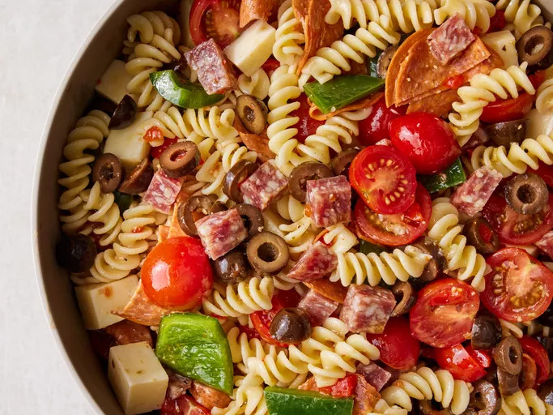

Italian Pasta Salad

Description
This pasta salad with pepperoni, tomatoes, and provolone cheese is the best I've ever eaten, and people request it frequently.
It's a very easy, light-tasting side dish for a picnic or dinner.
Ingredients
1 (16 ounce) package fusilli (spiral) pasta
3 cups cherry tomatoes, halved
½ pound provolone cheese, cubed
½ pound salami, cubed
¼ pound sliced pepperoni, cut in half
1 large green bell pepper, cut into 1 inch pieces
1 (10 ounce) can black olives, drained
1 (4 ounce) jar pimentos, drained
1 (8 ounce) bottle Italian salad dressing
Steps
Gather all ingredients.
Bring a large pot of lightly salted water to a boil. Cook fusilli pasta in the boiling water, stirring occasionally, until tender yet firm to the bite, about 12 minutes. Drain.
Combine pasta with tomatoes, cheese, salami, pepperoni, green pepper, olives, and pimentos in a large bowl. Pour in salad dressing; toss to coat.
Enjoy!